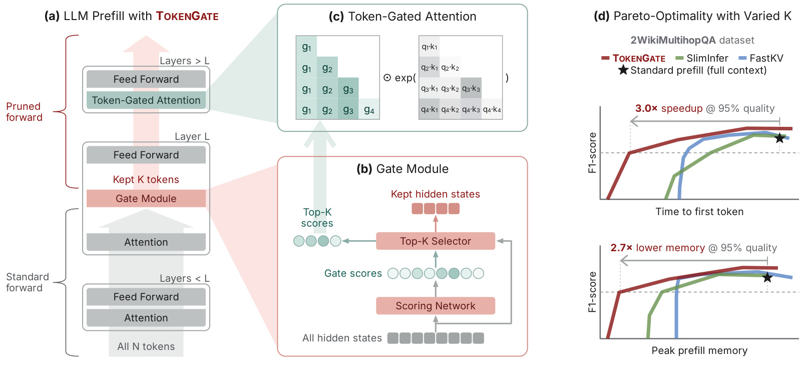
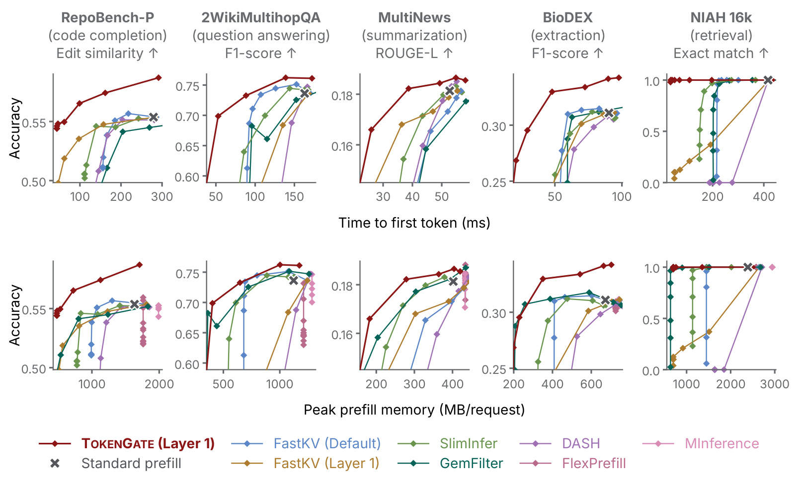
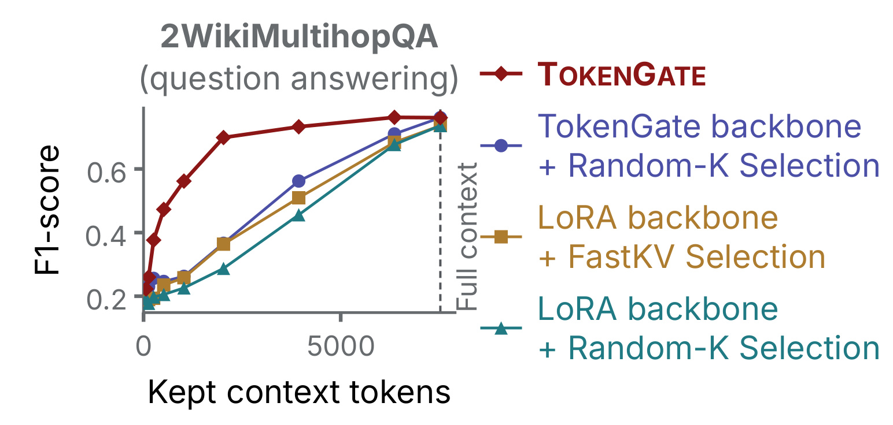
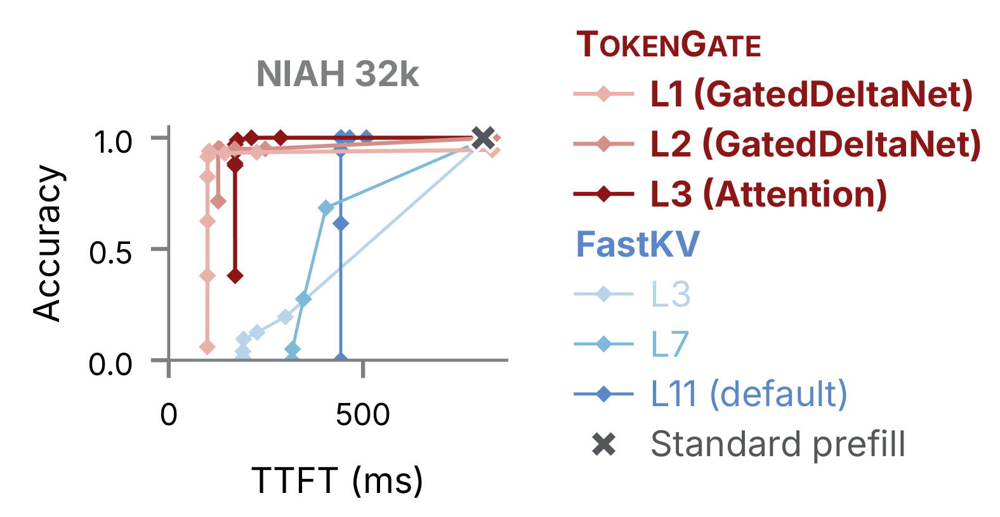
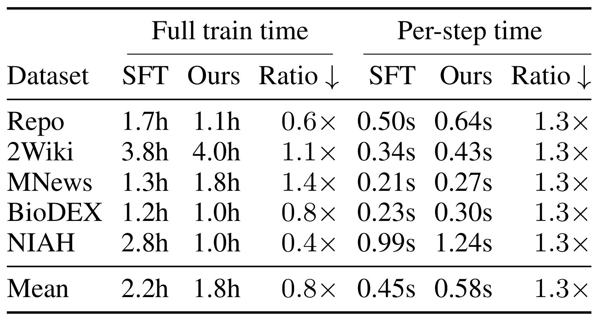
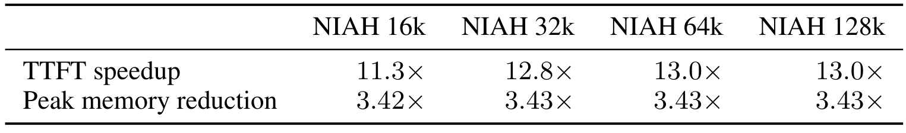
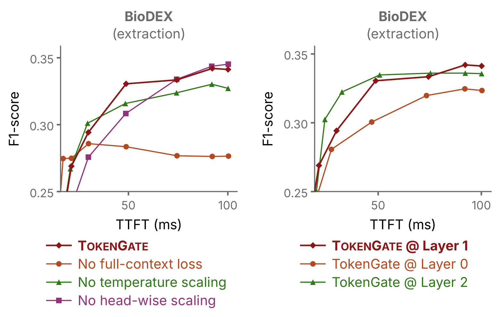

TokenGate：把任务相关词元选择训练进长上下文预填充
论文：TokenGate: Adapting LLMs for Fast and Memory-Efficient Prefill with Learned Token Pruning。作者为 Liana Patel、Rishabh Ranjan、Ion Stoica、Matei Zaharia、Carlos Guestrin；第一作者主机构为斯坦福大学，合作机构为加州大学伯克利分校。2026年10月19日首次提交，核对版本为 v1，精读日期为2026年10月21日。来源：论文入口。作者官方仓库入口本轮可访问但页面为空，代码、权重和内核尚无法独立检查。以下数字来自论文实验，未在本地重跑。
即使某些输入词元并不承载关键信息，Transformer仍让所有词元经过每一层，长上下文预填充因此成为模型服务的计算与内存瓶颈。
1. 背景和问题
这对应摘要与引言提出的实际矛盾：阅读长代码仓库、跨文件上下文、整篇医学文章或多份新闻时，人会先略读，再集中处理与当前问题相关的部分；通常的自回归模型却没有在中间层停止处理无关输入的能力。用户已经给定问题，并不意味着模型在系统层面只对问题相关材料付费。材料长度增长时，注意力计算、逐词元前馈网络以及缓存占用都继续增长，最终表现为用户发出请求后等待首个回答词元的时间变长。
这里讨论的是预填充阶段，即模型处理完整输入并建立缓存的过程。完整回答还包括之后逐词元生成的解码阶段，两者的计算结构不同。预填充可以并行处理整个输入，注意力计算量随着长度近似平方增长；前馈网络和键值缓存随长度线性增长。解码一次只生成一个词元，主要读取已有缓存。因此，减少输入处理成本至少有两个切口：在完整输入已经计算完之后压缩缓存，能降低后续读取量；在上层计算开始前停止一部分词元传播，则还能省去其上层注意力和前馈计算。TokenGate选择后一个切口，主要结果衡量首词元延迟与预填充峰值内存，不能把最高加速比直接写成完整回答加速比。
作者限定了一个实际输入场景：提示由请求或问题以及需要阅读的文档构成，文档在请求到来时才提供，无法预先构建并复用键值缓存。比如用户刚上传医学文章，询问文章报告了哪些不良反应；或者代码代理刚检索出跨文件代码，需要补全下一行。这个场景解释了为何只依赖离线摘要、提前缓存固定材料或无限延长窗口并不直接解决作者的问题。评估关注当前任务准确率与实际预填充成本之间的折中，而不是生成一份通用、可反复使用的外部压缩记忆。
已有无需训练的词元剪枝方法通常读取某一中间层注意力统计，根据最近几个查询的注意力权重保留高分输入。它们部署便宜，但剪枝层太晚时，大部分计算已经发生；把同一规则搬到早层，表示又可能不足以支持可靠的重要性判断。这样形成两难：早剪枝收益大、误删风险大；晚剪枝较稳、速度上限低。FastKV、SlimInfer是这一路线的代表。TokenGate通过任务监督直接学习早层评分，同时允许主干适应被删词元后的信息缺失，使模型和选择规则共同变化。论文对同一层号上的FastKV作比较，正是为了区分早剪枝本身与评分质量的效果。
另一条路线是重新设计网络，让不同词元进入不同深度，或者从预训练开始采用稀疏注意力、线性循环混合结构。这类方法可以降低复杂度，却涉及较高训练和架构迁移成本。TokenGate的定位是在已有预训练模型中插入小门模块，再采用类似参数高效微调的流程。它并未证明所有长上下文模型都能立即替换为这一结构；它展示的是在两个具体十亿参数量级主干上，已有权重可以通过任务数据完成适配。能否在大模型、通用指令、多轮代理状态中保持同样收益，仍需验证。由于它在整个词元传播轴上减少计算，也有机会与单层内部降低注意力复杂度的方法叠加。
容易忽略的是，剪掉某个词元的后层残差流，并不等于抹去它对模型的所有影响。门之前的层已进行因果信息混合，被保留词元表示可能承载部分此前上下文；门所在层的注意力也读取过全量输入。因此，保留很少词元后仍能回答，并不意味着其余原始文本没有语义价值，而是前几层加上共同训练可能把部分信息转移到了继续传播的表示中。这解释了为什么作者要区分选择器学习与主干共同适配，不能只用保留率解释性能。它也提示，评估词元重要性时不能只看红色高亮是否碰巧落在答案文字上。
任务边界还包括不可剪部分。指令、问题、回答模板以及训练中的答案词元可指定为始终保留，答案位置正常参加语言建模损失。测试预算只对可剪文档生效，不能把保留六十四个词元理解为整个提示只有六十四。复杂系统提示、长工具定义或多个不可剪段都构成额外成本下限；生产输入与论文模板不同时，原始速度数字也不应直接沿用。预算是否包含模板，正是与其他压缩方法比较时要统一的口径。模型的实际保留序列长度还包括这些非文档位置，注意力与缓存的真实形状要据此计算。
本工作的研究价值在于把离散选择转化成可端到端训练的连续注意力调节。困难不是调用排序函数，而是前向做了不可微选择之后，评分网络还能从最终任务损失得到有效信号。作者没有另外制作词元重要性标签，也没有让外部大模型逐词标注。它把入选词元的分数带入后层注意力，让损失沿分数数值反传。这样同时回答选择什么以及如何使用被选择表示，而非把选择器当作独立前处理器。对研究者而言，需要追踪的是分数、集合、隐藏状态和损失四者的路径；对服务工程师而言，则需把模型收益与特定内核、缓存策略和质量阈值一并理解。
此外，本论文的任务评分只观察最终答案，不要求完整保留输入事实。摘要、医学抽取和代码补全中，漏掉一个罕见名字或关键条件的成本可能远高于平均分变化。因而真正的评估对象应包括答案质量、错误类型和覆盖范围，而非仅比较保留词元数量。所谓重要性也始终依赖请求和训练分布：一次回答中可删的信息，换一个问题可能就成为必要证据。
2. 方法
2.1 门模块：从注意力后残差中学习保留集合
首先区分注意力前后的表示。每层注意力把此前位置的信息混入当前词元，经残差连接得到注意力后表示；门读取的是这个已经上下文混合、并归一化后的残差，而不是原始词向量。公式（1）与（2）列出标准层计算和单头因果注意力，作为后续修改位置的参照。原文先定义标准计算再给出门模块，按此顺序能看清门为何不需要依赖完整注意力权重矩阵，也能理解它何以扩展到循环混合层。
符号解释：$h_i^{\ell}$是第$\ell$层输入残差，$a_i^{\ell}$是注意力后残差，$\widetilde a_i^{\ell}$是其归一化结果，$\operatorname{LN}$是归一化操作。门放在第$L$层注意力之后、该层前馈网络之前；该层已经处理全量注意力，但被删词元不再运行其前馈网络。这一位置意味着层编号不能简单理解为前面完全没计算过，也说明门的输入已经包含早期上下文信号。
符号解释：$q_i$、$k_j$、$v_j$分别是查询、键、值向量，$d_{\mathrm{head}}$为头维度，$\alpha_{ij}$是$i$对$j$的注意力权重；$j\le i$保持因果约束。门不改变原始位置的前后关系，保留后的序列更短，旋转位置编码仍使用原始位置。忽略这个区别会把删词元同时变成位置重写。该式是原始标准注意力，不含门值，只用于对比后面的连续偏置修改。
符号解释：$\mathcal P$为可剪集合，$\mathcal N$为不可剪集合，$\widetilde b_j$是小评分网络输出，$b_j$是沿序列做均方根归一化后的分数，$\epsilon$稳定分母，对应公式（3）。网络初始化为零输出，让门偏置在训练起点不偏爱任何词元；归一化控制不同输入和长度下评分量级，而非让每个位置独立归一化。不可剪位置固定零分，不代表它们不重要，而是它们不参与丢弃决策。
符号解释：$K$是可剪文档预算，$\mathcal S$是继续传播集合，对应公式（4）。不可剪部分直接加入，不参与文档预算竞争。前向是硬选择：被删词元在这里停止，其后层隐藏状态和后层键值缓存均不生成；这与计算完全部层再淘汰缓存的成本结构不同。选择后还要恢复原始顺序，使后层在缩短序列上保持原有因果关系，分数顺序本身不是新的输入位置顺序。

图1把计算分成三个相连阶段，应从左下向左上看。全量词元首先经过门以下标准层，在门所在层完成注意力后，中心评分网络输出连续分数，选择器只把高分词元及不可剪位置送入剩余计算。左上红色括号对应剪枝后传播，所以收益既来自减少注意力矩阵大小，也来自减少逐词元前馈运算。中上方三角矩阵强调，连续门值乘在键对应的注意力项上，并由因果掩码约束可见范围；分数被用两次，一次决定表示是否留下，一次决定后层如何读取这些表示。后一次使用才是评分网络的梯度路径。右边两条曲线是原图附带的动机结果：在多跳问答上，质量阈值设为全量模型的百分之九十五时，展示三倍首词元速度和二点七倍内存改善。这个阈值允许质量差，不能与正文无下降的另一些运行点混用。图中没有展开模板等不可剪部分，也未显示解码阶段低层缓存的保留方式。还要注意层内位置，门之上的首个前馈操作已经受益，门以下注意力仍支付全量成本，峰值内存因而有下限。可以预期门越早潜在收益越大，但表示信息不足时选择会变差。框图中的保留隐藏状态并非摘出来的原文文本，而是已经混合上下文的向量；上层读取这些向量的方式也经过共同训练。因此看到少量红色词元仍能完成任务时，不能推断其余输入从来没被读取，它们已经在底层计算中发挥过作用。红色箭头表示缩短后的前向传播，而非再跑一次独立检索；只有选中表示继续进入深层这一事实，才直接对应计算节省。图内各模块的顺序也对应正文先评分、后注意力偏置、再共同训练的解释。
2.2 词元门控注意力：给硬选择留下数值梯度
硬排序不可导，但入选分数仍可以是损失的可导输入。公式（5）让每个键的指数注意力乘以该键门值。门值的归一化常数在分子分母抵消，等价于在注意力分数上增加偏置；这个等价关系既是实现高效内核的依据，也解释了评分网络如何得到最终答案损失反馈。提高某个入选键的分数会改变其被后层读取的比例，而不只是改变离散集合。作者随后依次加入逐头增益和长度温度，控制偏置强弱以及剪枝引起的分布变化。
符号解释：$g_j$是入选词元门值，分母只对因果可见且入选的键求和，对应公式（5）。梯度在集合不发生切换的局部区域存在，不能解释成对排序索引本身求精确导数。训练早期与边界处仍有离散变化，采用的是与专家路由相似的分数加权路径。初始分数为零时，门不额外区分不同键，注意力退化为该保留集合上的普通注意力。
符号解释：$h$为注意力头，$\gamma_{\ell h}$是每层每头增益，正值变换保证高分词元仍获得更大偏置，对应公式（6）。不同头能学习不同门控强度，而非完全照搬同一排序权重；初始增益与该层注意力分数标准差对齐，避免新增信号一开始过强或过弱。高分代表共同选择优先级，具体读取强度还由头、层及内容匹配共同决定。
符号解释：$m_i$为查询$i$在保留词元中的秩，$p_i$为原始位置，$\sigma_{\ell h}$是可训练温度参数，对应公式（7）。删键会改变归一化分布尖锐程度，长度对数比校准这一变化。本文沿用原文写法，实际内核对序列起始秩的处理需要代码进一步核验，不能在空仓库状态自行补写。训练在全量上下文初始化时温度为一，使新增校准不立即扰动已有模型。
符号解释：公式（8）合并内容匹配、门偏置与长度温度。分数既参与选词，也参与后层读取；若训练使用门偏置、推理删掉偏置，即使集合相同也不是同一模型。作者基于高效注意力实现带键偏置内核，并对填充到固定长度的后层计算捕获计算图。解码时每个已保留键的偏置固定，可预先存为加性掩码，但查询温度仍由原始位置和保留秩计算。
2.3 端到端门训练：全量目标与随机预算共同适配
训练参数包括评分网络、各层各头增益与温度，以及主干低秩适配参数。作者使用标准下一个词元交叉熵，无需另造重要性标签。答案词元不可剪，损失正常计算；评分器沿入选分数接受梯度，主干学习在缺失部分文档隐藏状态时完成任务。这种共同适配比给冻结主干加排序规则更强，公平比较时也必须说明模型各自做过何种适配。训练中完整分支与剪枝分支共享门前图，再分别计算门后输出，原文强调额外成本来自较短分支而非重新做两遍全量输入。
符号解释：$\phi$是全部可训练参数，$t$为目标答案位置，$K$是当前文档预算，对应公式（9）。预算改变继续处理的输入，不改变目标答案。只用小预算训练可能使模型依赖特定压缩率，也让长期未入选位置缺少有效反馈，因此作者不固定单一预算。这里的监督是任务答案，不是人工指定哪些输入必需；门必须从答案损失间接学习相关性。
符号解释：完整预算保留全部文档，随机预算按对数均匀覆盖不同压缩率，两次损失平均，对应公式（10）。全量分支给被剪词元梯度并锚定完整能力，小预算分支训练鲁棒性。实际训练为编译效率使用离散预算列表。推理只做指定预算一次前向，没有双预算平均；生成词元始终保留，门偏置为零。门前层默认保留全量缓存，门后层仅缓存入选文档和生成词元；主要实验全部禁用了可选门前缓存剪枝，不能据此声称全层缓存都只含预算数量的输入。
3. 实验结果
3.1 五项任务的质量、延迟与内存前沿
主实验使用Qwen3-1.7B，分别在代码补全、多跳问答、多文档摘要、医学不良反应抽取和长文单针检索上训练任务模型，贪心解码最多生成一千零二十四个新词元。RepoBench-P评估五百例，平均上下文约一万一千词元，以首行代码编辑相似度衡量；二维多跳问答评估二百例，平均约七千五百词元，以词元级F1衡量；MultiNews评估二百例，平均约二千七百词元，以ROUGE-L衡量；BioDEX评估五百例，平均约四千五百词元，以不良反应集合F1衡量；NIAH评估二百例，覆盖二十个留出城市和十个插入深度。不同列分数不可直接横比，更不能把摘要分数与检索准确率相加当作统一质量指标。

图3每列一个任务，上排横轴为首词元毫秒延迟，下排为每请求峰值预填充内存，纵轴为对应任务质量。红色曲线通常更靠左、更靠上，意味着在这些预算范围内能用较少时间或内存达到同等质量。灰叉是标准全量预填充，其他曲线为无需训练剪枝和稀疏注意力基线；同一曲线上的点来自不同预算，不能把最左点速度和最右点质量拼成一个配置。原文报告匹配全量质量时，首词元加速为一点四至十一点三倍，内存降低一点五至三点四倍；相对下一名基线，预填充最高快六点四倍。内存比较在原文出现二倍和二点一倍两个口径，本文保守使用约两倍。为可读性图3隐藏了显著更慢或质量很差的点，附录图6有全轴版本；所以此处可见前沿并非全部预算点，也不能据坐标截断判断差距在所有区域都同样大。同一任务的横轴改善和纵轴改善应在同一预算点读取，且每请求峰值内存不包含所有线上调度行为。
准确率不下降只指在作者各任务、各自指标和相应预算下匹配任务微调全量模型，不是对任意提示或压缩率的无损承诺。TokenGate主干和门共同训练，基线使用相同数据和低秩配置训练的标准主干，因此反映整个可学习剪枝方案与适配后启发式剪枝的差异。TokenGate大预算质量有时高于普通模型，可能还包含训练正则化、收敛和适配轨迹的影响，不能把全部增益都归因于选对了原始词元。由于每个任务都有专门训练集，其结果也不等于零样本通用压缩器的性能。
计时为单张A100、批量一、半精度权重，低秩适配合并进权重，稠密层经过编译。作者为SlimInfer和DASH重写可编译版本，核对词元选择一致并报告较快版本；TokenGate和FastKV的固定形状剪枝后阶段都用计算图捕获。这个说明增强比较可信度，但并发批处理、长度混合、显存碎片、调度开销和其他GPU内核仍可能改变收益。图表未给线上吞吐和长答案总时延，不能把内存下降直接换算为相同倍数并发能力。新增门控内核成本与普通注意力接近，也属于这组具体实现测量，不能据此忽略服务接入工作。
3.2 学到的选择与主干适配各贡献什么

图5在二维多跳问答上固定保留数量，比较四种组合。红色完整方案在小预算显著领先，说明学到的选择比随机选择有效。紫色将TokenGate主干配随机选择，绿色将普通低秩主干配随机选择；前者仍更好，意味着主干已适应缺失输入，收益不只有评分器。黄色在普通主干早层使用FastKV评分，比随机稍好但仍落后于完整方案。越接近全量，差距越小，符合预算放宽后选择逐渐不重要的预期。这是对共同适配的间接支持，尚未给所有选择器与主干的交叉移植，因此不能精确分摊贡献百分比，也不能由曲线证明信息被压入某个特定词元。一个合理解释是早层表示和后层读法均变得更耐受剪枝，但还需表示分析才能确定信息如何重新分布。进一步实验可固定同一个主干，把学习门和启发式门交叉替换，才能更直接分离分数质量与主干鲁棒性的独立影响。
3.3 混合注意力架构的可扩展性

图4用Qwen3.5-2B在三万二千词元单针检索上改变门位置。该模型每四层一层完整注意力，其余为Gated DeltaNet；FastKV依赖注意力权重，只能在完整注意力层选词。TokenGate读取混合器后的归一化残差，两种层都能放置。第三层门在匹配全量准确率时，首词元延迟降低三点八倍，比最佳FastKV降低二点一倍。第一、二层门最高七点八倍加速，则允许相对全量百分之六以内的准确率差。更早门的最高速度不满足同样的无下降约束，两个数字必须分别引用。红蓝系列能选的层号不同，结构位置上的优势是方案的一部分，不能解释为所有层同配置都已严格验证。该实验只有一个检索任务，混合架构上的多文档摘要与复杂代码补全仍缺证据。低层门把保留集交给不同类型混合器，后续层的计算路径也相应缩短。由于横轴仅计首词元，红线较靠左并未告诉我们生成很多答案词元后优势是否保持。实际服务还需分别测量较长解码，并检查循环状态和完整注意力缓存是否一致。
在混合主干门后，完整注意力加入门偏置和温度，循环层只处理保留词元，从空状态建立递归状态。完整注意力位置编码沿用原始位置；门前循环状态总结过全部输入，不能像缓存一样逐词元删除。低秩适配也只加在完整注意力的查询和值投影，循环层不做相同适配。因此兼容混合架构有明确技术含义，不是每个循环模块都直接使用相同门控公式。正文实验段有一处简称Qwen3-2B，图4、后文和附录明确为Qwen3.5-2B，本笔记按后者记录。循环模型在更长输出中的状态演化是否同样稳定，本文没有从该首词元实验推出结论。
3.4 训练成本是否接近普通微调

表2前半是完整训练时长，后半是每步耗时，每步TokenGate约慢一点三倍，符合多运行一个短预算分支的机制。全程时长受收敛步数影响：Repo从一点七小时降为一点一小时，BioDEX从一点二降为一点零，NIAH从二点八降为一点零；二维多跳问答从三点八增至四点零，MultiNews从一点三增至一点八。表内均值是二点二对一点八小时，比约零点八。第五点四节声称五项中四项更快，表格实际只有三项更快、两项更慢，本笔记按具体行数字。表注为单A100口径，正文另提四卡训练，没有运行日志不能重建墙钟与卡时换算。平均更快也不代表每项任务更便宜，尤其摘要总时长明显增加，实际预算不能只采用均值行。单步时间一栏是稳定训练步骤的平均成本，完整时长还涉及不同任务需要多少步才能达到停止条件。若只看单步结论会低估提前收敛价值，只看均值总时间又会隐藏个别任务变慢，两个维度应一起记录并按同等收敛标准复核。
这组结果说明参数少不等于训练免费。随机预算、附加前向、带偏置内核和编译都需适配，较少步数是否抵消成本取决于数据任务。多文档摘要的反例表明训练投入与推理收益要在同一个业务负载上计算。论文没有大规模通用混合任务微调费用，也未给数据规模增长曲线；更稳妥的理解是当前任务适配与普通微调同量级。若实际服务请求量很少，额外训练和维护成本甚至可能超过推理节省，这需要结合使用次数计算，本文没有提供这样的盈亏平衡点。
3.5 超出训练长度的检索外推

表3使用一万六千词元单针任务训练的模型，测试一万六千至十二万八千输入。匹配各长度全量质量时，首词元加速依次十一点三、十二点八、十三点零、十三点零倍，峰值内存改善依次三点四二、三点四三、三点四三、三点四三倍。延迟收益随长度先增大后趋稳，说明长输入上省掉后层计算更有价值；内存倍率几乎固定，符合门前全量计算构成峰值下限。数字为各长度匹配质量的运行点，不能推断固定预算在所有长度上质量一样。城市和文章在训练测试间分离，针插入深度变化，比单位置例子更有说服力；但目标仍是一条清晰事实句，证据集中且容易评估。将最长长度写成任意任务都支持，会超出数据范围。内存比率稳定不表示绝对内存恒定，输入变长时两种方案的实际字节数仍可能上升。报告只给比例，因此不能从该表计算固定显存能放多少请求；也不能假定最长输入已经没有其他系统瓶颈。
外推支持长度校准和预算训练的潜力，却不能替代长文推理。单针任务相关信息集中，理想策略接近找出短片段；跨文件依赖、多证据链和摘要覆盖则需保留许多远距信息。附录多跳问答往往需要更大预算才能匹配答案，也说明任务的信息需求不同。生产评估可以增加跨位置多证据召回、罕见实体覆盖和答案引用完整性，在相同最终质量下重新选择预算。论文没有证明温度是长度外推的唯一原因，预算训练、主干适配和任务结构都可能参与，不能从这一张表单独完成因果归因。
3.6 温度、全量分支与门层位置

图7左半在BioDEX上移除配方中的一个部分，右半改变门层。去掉全量损失后，大预算质量明显下降，说明完整分支保护未剪或轻剪能力，也给未入选位置反馈。移除温度损害部分中高预算折中，支持删键后需校准；去掉逐头缩放在部分区域落后，高延迟端又可能接近或略高于完整方案，故不能说每个点都被严格支配。右半零层门整体较差，第一和第二层在不同预算各有优势，体现早剪省计算与表示成熟度的权衡。该消融只有一个任务和主干，不能推广出通用最优层号，也没有覆盖多个门级联。若增加多个门，梯度和预算分配会更复杂，不能从单门效果直接相乘估算速度。层号选择也受任务所需信息影响，医学实体抽取的最佳层不必适合全局摘要；训练成本允许时应以完整质量与延迟曲线选层，而不是只沿用图中默认编号。图中纵轴仅显示一段分数范围，读取微小差别还需注意坐标刻度与缺少误差区间的限制。
3.7 保留词元与失败答案需要一起看
附录按每个测试抽样序列第一条提示展示词元，降低挑选漂亮样本的风险。NIAH例子在一万五千八百四十三词元中保留六十四个，目标句二十四个里保留二十一个，答案正确；保留位置覆盖全上下文十个分位，说明不是简单最近窗口。代码更多保留括号、逗号等结构符号；医学保留诊断、结局和连接词；多跳问答保留人名、年份、实体。这种差异支持任务监督影响选择，但高亮是个体案例，不是对全部样本的定量特征归因。
同一附录也坦陈错误：MultiNews欠保留名字和地点，摘要事件大意正确却人物、职业或地点不对；BioDEX剪枝模型漏掉全量找到的一个反应，全量自己又漏了其他金标准；代码例子两个模型都答错。五个展示例子和前八条观察不足以估计总体错误率，却提醒聚合质量匹配并不等于逐样本无损。尤其医学、检索增强回答若误删罕见实体，输出仍可流畅，单靠可读性难以发现。对这种风险需要按业务重要实体设计检查，必要时提高预算或回退全量；论文没有给出已验证的自动回退机制。
4. 总结
TokenGate的贡献是让输入选择和后层如何读取输入共同接受任务监督。评分器读取早层上下文表示，硬选择节省真实后层计算，连续偏置给评分网络梯度，全量与随机预算损失让主干适应不同压缩率。它把可学习条件计算放在已有权重的适配阶段，在两个十亿参数量级主干上展示精度、首词元延迟和内存前沿。结合随机选择消融，可以合理判断收益不只有缓存布局，还包含任务相关选择与主干鲁棒性的共同变化。这里最应保留的是完整机制和质量条件，而不是把某个预算的最大速度当作所有任务共同结论。
对长历史推荐和排序中的行为编码，启发是把哪些历史继续进入昂贵层作为训练目标的一部分，而非只依赖最近时间或启发式注意力。若迁移这一思路，门应读取融合目标候选与行为信息的表示，预算由历史长度和时延要求联合设计。不过推荐的标签、时间间隔、多任务目标与候选依赖都不同，语言模型首词元实验不能替代排序效果验证。这只是研究推断，论文没有推荐数据或线上实验。特别是一个候选相关的门会影响多候选共享计算，而与候选无关的门又可能漏掉长尾相关行为，需在系统设计时明确取舍。
- 局限一：质量匹配有特定条件。 五任务分别用任务数据微调，预算和指标不同，缺少通用助手、多轮工具链和大参数模型结果。长度外推集中于单针，不能替代分散证据推理。
- 局限二：系统指标覆盖有限。 单请求A100预填充不能推导批处理吞吐、完整回答延迟和线上容量。主要实验禁用门前缓存剪枝，上层不生成缓存与全层缓存压缩必须区分。
- 局限三：实现仍待公开。 推理必须保持门偏置、温度、原始位置和不可剪模板。官方仓库当前为空，内核边界、离散预算与缓存逻辑无法独立核验，入口存在不代表现在能直接复现。
- 局限四：原文存在口径差异。 更快训练任务数与表2不一致，单卡表注和四卡描述需澄清；图内百分之九十五质量阈值、混合模型百分之六差异和无质量下降是不同条件，应分别引用。
- 局限五：误删重要信息仍会发生。 聚合分数相近时，罕见实体、多种不良反应和代码细节依然可能消失。案例中流畅的错误答案说明保留率不能替代事实准确率与必要证据覆盖。
后续首先应在代码与权重公开后检查带偏置内核、位置索引和门前缓存开关，并用训练日志澄清表2统计，而不是只重现最大加速数字。第二，在同一模型上增加多针、跨文件依赖、实体敏感摘要和多轮输入，观察预算放宽能否可靠修复最坏样本，避免平均分掩盖高成本错误。第三，测量混合长度并发服务，分开记录预填充、解码、尾部首词元延迟与端到端成本，确认内核和调度影响。若延伸到行为序列，还应比较共同训练门与冻结主干门，检查短期强信号是否压过长期罕见兴趣，并用业务标签验证信息覆盖。
现有证据支持在作者任务适配与测量条件中，可学习词元剪枝显著改善长上下文预填充成本前沿。要确定使用边界，还需要公开实现、更多规模以及实际并发负载。判断是否值得投入时，应把任务监督可用性、查询分布稳定性、训练维护投入和推理调用量放在同一张成本表里。若输入高复用，可缓存方案可能有不同优势；若请求高度变化，当前面向请求时文档的设定更贴近实际。论文为后一种场景提供了有力的方法方向，但尚未解决通用压缩、多轮状态共享和错误回退等全部服务问题。